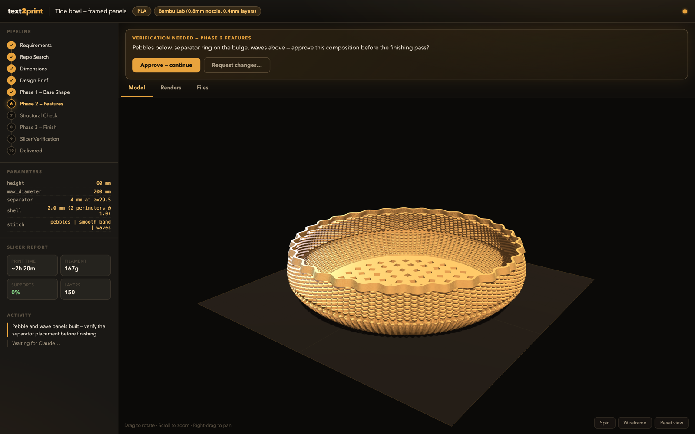
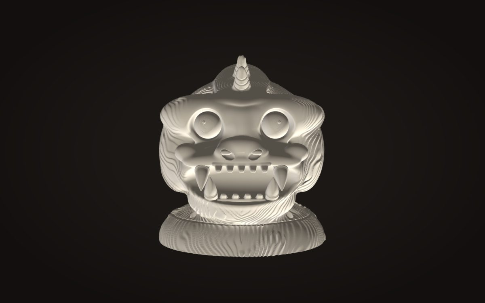
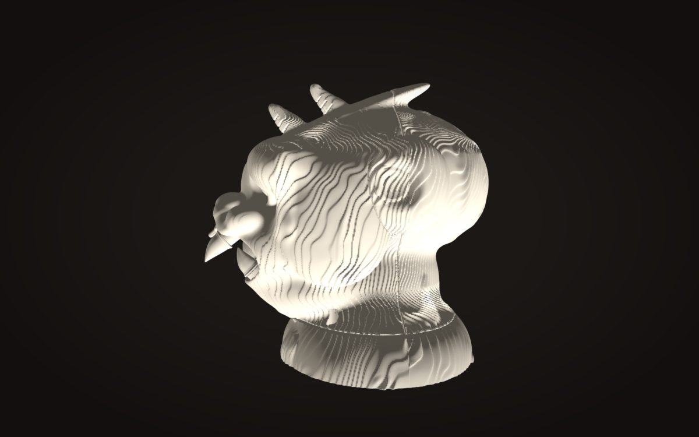
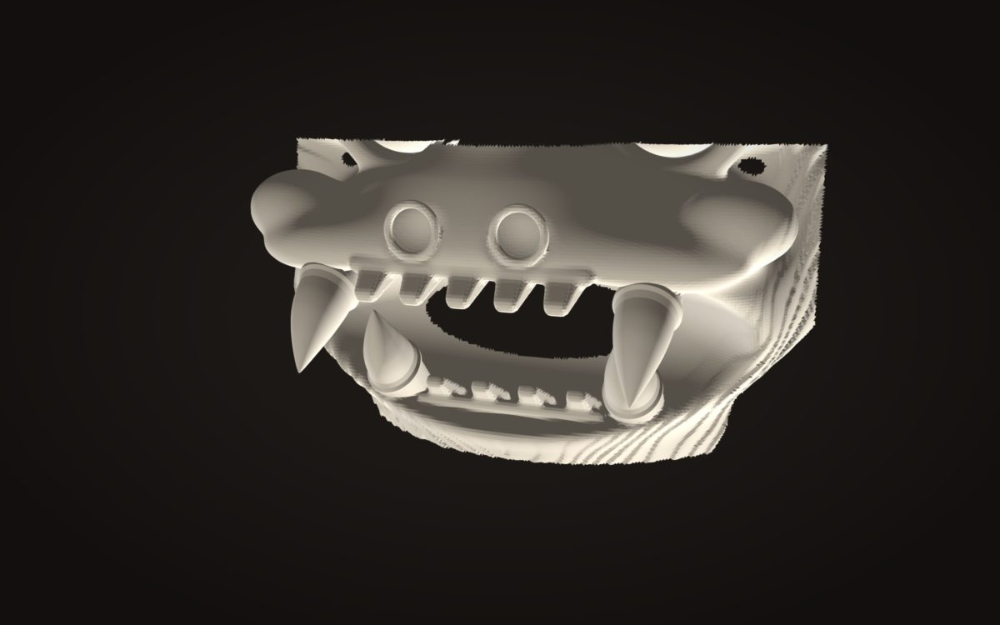
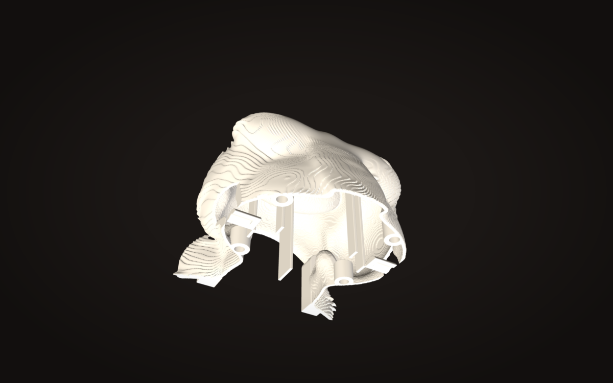

Digital · text2print on GitHub ↗
Describe a thing.
Get a file the printer accepts.
text2print is a Claude Code skill that turns a sentence into CadQuery code, checks the result the way a printer would, and refuses to hand over a model until four gates have been passed. The sofubi ape bust and the wave panel behind the desk both came out of it.
CAD is where objects stall.
Most things I want to print are simple to say and slow to model: a replacement foot for a table, a sconce that is its own diffuser, a relief panel that has to print in tiles. The slow part is not the idea, it is the hour in a modeller and the two failed prints after it. The skill exists so the sentence is the input and a verified file is the output.
Verified is the word that matters. A model that looks right on screen and fails on the bed is worse than no model, so every phase is checked before the next one starts, and the last check is the slicer itself.
One skill, four modes, ten phases.
A new design walks from requirements through a repository search, real-world dimensions and a design brief before any geometry exists. Then a phased build: base shape, features, a structural pass that checks fill ratio, wall thickness, cantilevers and steep overhangs against the material’s rules, and a finishing pass. The other three modes start from an existing STL: use it as reference, fix its overhangs with a ray-cast ceiling map and a manifold fill, or audit it for printability.
The rules live in the skill as tables, twelve of them: material profiles with shrinkage and bridge limits, clearance and press fits per material, snap-arm geometry with strain limits, living hinges, print-in-place joints, minimum feature sizes, heat-insert and screw dimensions, board mounting patterns, and structural rules for cantilevers and thin walls. The code reads the table instead of guessing.
A studio that watches the folder.
A single-file Flask app on port 7384 watches the working directory for STLs, renders and a state file, and streams changes to the browser. It shows the model on a 256 mm print plate with its dimensions and triangle count, the ten-phase rail, the render gallery, the parameter table, the slicer report and the activity log. Every STL the skill exports appears there within half a second.

The gates are the point of the studio. At design-brief, phase-1-base, phase-2-features and final-review the skill writes the question into the state file, the studio shows an approve-or-change banner, and a background watcher waits up to thirty minutes for the click. The skill cannot proceed past a gate on its own; a change request comes back as a note and the phase is redone.
Checked the way the printer would.
printcheck slices the mesh every 0.4 mm and looks for islands, material with nothing under it, which are fatal. It measures overhang area past a 50° slope, first-layer contact and features thinner than 0.9 mm, and reports island positions in world coordinates so they can be found on the part. overhangs measures steep exterior faces only, probing 1.5 mm along each normal to exclude inner skins, because a naive count of every steep face cried wolf on hollow parts.
Then the real slicer. PrusaSlicer runs headless with named profiles, a 0.4 mm nozzle at 0.16 mm layers for the bust, 0.08 mm for the eye plugs, a 0.8 mm nozzle at 0.32 mm for the wave tiles, and its log is read for warnings. A control test proved the log is worth reading: a deliberately floating pin trips “Floating object part, Loose extrusions”, so a clean log means something.




The ape is the hardest thing it has produced: a six-inch kaiju bust sculpted as a signed-distance field on a 0.5 mm grid, hollowed to a 2 mm wall with an exact distance transform, and split into five shells at the base ring and the skull’s widest line, with pins, ribs and a chamfer at every seam. Horns, fangs and eyes print as separate plugs at finer layers. All five shells are watertight and pass printcheck with zero islands.
- Bust150 × 165 × 161 mm · 2.7 M triangles
- Filament≈370 g PLA+ across 26 parts · ≈52 h
- Wave panel12 tiles · 2,000 g · ≈51 h · 0 supports
Sculpt in a field, split with a plane.
Organic shapes fight constructive solid geometry, so the bust is a field: every feature is a distance function blended into the last, and the mesh is only extracted at the end. Hollowing is a distance transform of that field, which is exact where offsetting a mesh is not. The split is a plane through the same field, so the two halves share a surface to the voxel, and the seams are butt joints with pins rather than tongue-and-groove, which halved bed contact and went non-manifold when tried.
Most of what was learned is what a shape reads as at six inches. Hashed fur read as scales and shed eight hundred crumbs in the slicer, so it became a continuous raked shingle. Rimmed eyes read as goggles. Puck ears read as headphones. Brow furrows read as cassette slots. The rule that came out of it: at toy scale, one clear idea per feature, and the detail goes into the small areas a printer can actually hold.
- LanguagePython 3.10–3.12 · CadQuery · trimesh · manifold3d
- RuntimeClaude Code skill · PrusaSlicer CLI
- PublishedFebruary 2026 · MIT · 61 commits